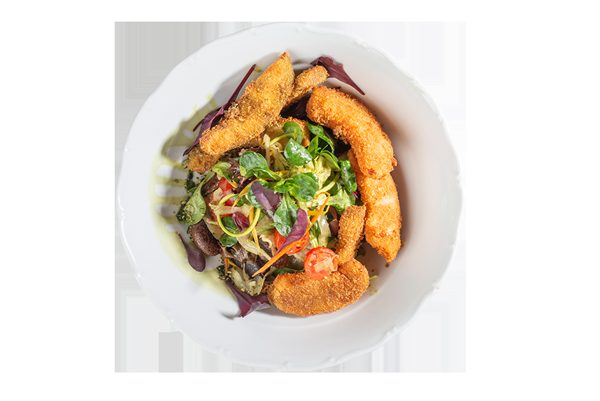
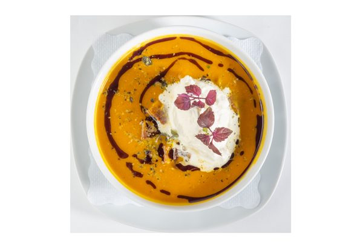

Menü oder Karte
Montag bis Freitag von 11:00 bis 15:00 Uhr stellen Sie sich Ihr Mittagsmenü selbst zusammen. Die Küche ist durchgehend von 10:00 bis 22:00 Uhr für Sie da.
Mittagsmenü — selbst zusammengestellt
- Tagesgericht€ 9,90
- Menü-Suppe€ 2,20
- Menü-Salat€ 2,20
- Tages-Dessert€ 2,60
- Wochenhit (jede Woche aktuell im Menüplan)€ 8,90
Serviert Montag bis Freitag von 11:00 bis 15:00 Uhr. Tischreservierung erbeten.
À la carte
Genießen Sie die Gerichte aus unserer Speisekarte, die unser Küchenchef Marius Sandu mit Zutaten aus der Region zubereitet.

Ausgezeichnet mit dem AMA-Gastrosiegel
Für die frische Speisenzubereitung und den Einsatz regionaler Rohstoffe wurden wir mit dem AMA-Gastrosiegel ausgezeichnet. Rind, Kalb und Schwein kommen aus Österreich, Milchprodukte tragen das AMA-Gütesiegel, der Käse stammt von Christoph Leitner aus Tulwitz.
Für unser Backhenderl verwenden wir ausschließlich maisgefütterte Bauernhühner von Kicker.

Die Menüs der Woche in Ihre Mailbox
Nutzen Sie unser wöchentliches Menüplan-Abo: Wir senden Ihnen den Menüplan jeden Montag bequem per E-Mail — inklusive Wochenhit und Schmankerl-Tagen.